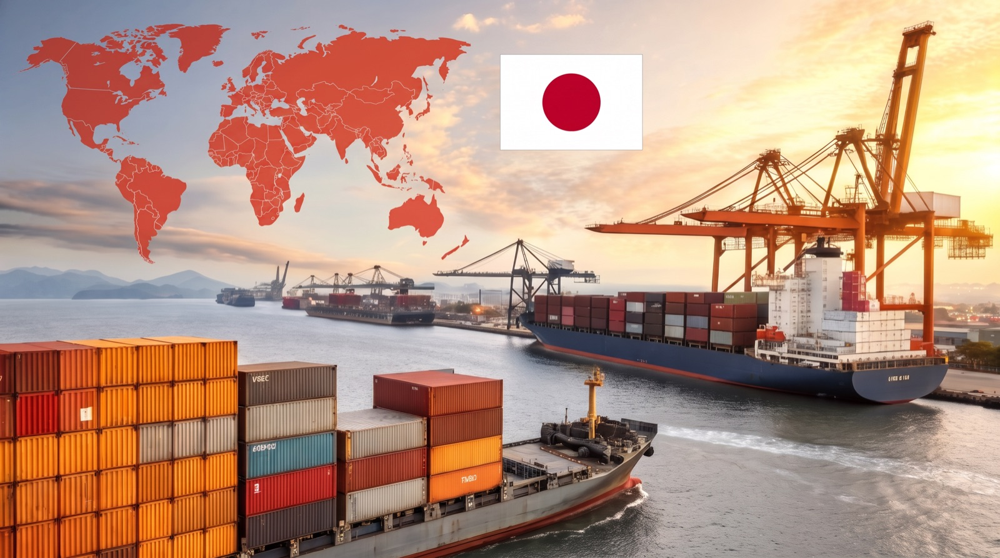
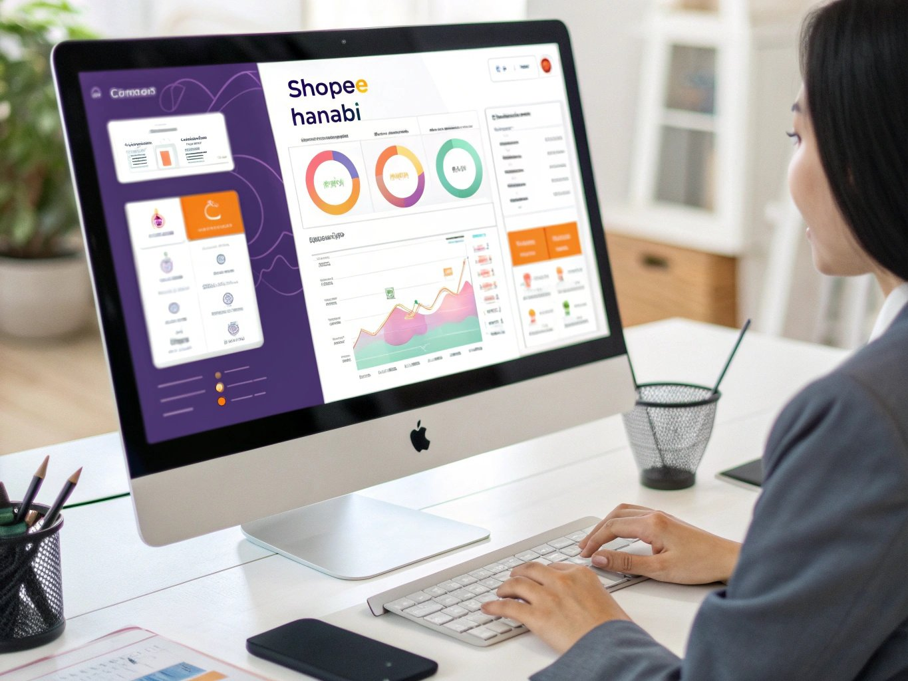

日本から東南アジアへ
越境ECで広がる
ビジネスチャンス
株式会社TYSS｜東南アジア輸出・AI業務効率化・システム開発
株式会社TYSSは、東南アジア輸出ビジネスとオリジナル商品の企画・販売を軸に、
Shopee販売支援ツールの開発、AIを活用した業務効率化コンサルティング、
システム開発と販売コンサルティングまで、物販とAI・ITの両面からビジネス成長を支援します。
事業内容
Business Overview

東南アジア輸出ビジネス
Shopeeプラットフォームを活用し、日本の高品質な製品を東南アジア市場へ展開しています。シンガポール、マレーシア、タイ、ベトナム、フィリピンなど、成長著しい市場で多数の商品を販売。現地ニーズを的確に捉えた商品選定と、効率的な物流管理により、安定した販売実績を築いています。
- 多様な日本製品の輸出実績
- 東南アジア6カ国での販売展開
- 現地市場に最適化された販売戦略
- 効率的な在庫・物流管理
オリジナル商品プロデュース
食品や日用品などのオリジナル商品を、企画からOEMでの製造、日本国内での販売まで一貫してプロデュース。クラウドファンディングを活用した新商品の立ち上げから、その後の販売展開まで手がけています。
- 食品や日用品などのオリジナル商品の企画・OEM製造
- クラウドファンディング発の商品立ち上げ・販売
- 企画から販売まで一貫したプロデュース体制

自社プロダクト開発
実際の物販経験から生まれたニーズを形にし、Shopee販売者向けのツール「HANABI」「HAKONAVI」を自社開発・提供しています。各製品の詳細や開発事例は、以下のリンクからご覧ください。
AI業務効率化コンサルティング
生成AIを業務に取り入れたい経営者の皆様に向けて、現状分析から改善のご提案、運用定着まで一貫してサポート。自社の開発・業務でAIを日常的に使い込んでいるからこそ、物販に限らず一般的な業務の効率化まで、現実に機能するご提案ができます。
- 経営者層向けのAI活用診断・改善提案
- 物販から一般業務まで幅広い効率化に対応
- システム構築と組み合わせた一体提案
システム開発・コンサルティング
物販で培ったノウハウをIT化し、システム開発から販売戦略のコンサルティングまでを一体でご提供。ECサイト構築や業務ツール開発に加え、物販とITの両面からビジネス課題の解決を支援します。
- ECサイト・業務システムの開発
- 物販×AIの販売コンサルティング
- システム導入から運用までの伴走支援
サービス一覧
Our Services
Shopee販売支援
自社開発ツール「HANABI」「HAKONAVI」を活用し、Shopee販売の運用をトータルでサポートします。
AI業務効率化コンサルティング
経営者層に向けて、生成AIを活用した社内運用の改善策をご提案。業務の棚卸しからAI活用の定着まで伴走します。
AI×システム導入支援
AIと業務システムを組み合わせた、より良いソリューションを設計・構築。既存システムへのAI連携もサポートします。
業務効率化サポート
物販に限らず、資料作成や定型業務など一般的な業務の効率化もサポート。AIツールの選定から運用ルールの整備まで支援します。
システム開発・コンサルティング
ECサイト構築、業務ツール開発、クラウド構築などのシステム開発と、物販×AIの販売コンサルティングを一体でご提供します。
選ばれる理由
Our Strengths
実践から生まれる知見
自社で東南アジア輸出ビジネスを展開しているからこそ、現場のリアルな課題とニーズを理解しています。机上の空論ではなく、実践に基づいたソリューションを提供します。
物販とITの両輪
物販ビジネスとIT開発の両方を手がけているため、ビジネス視点とテクノロジー視点の両面からアプローチ可能。最適なソリューションを総合的に提案できます。
スピーディーな対応
変化の速いEC市場において、スピードは重要な競争力です。小回りの利く組織体制で、お客様のニーズに迅速に対応し、ビジネスチャンスを逃しません。
伴走型サポート
単なるツール提供やシステム開発だけでなく、お客様のビジネス成長に寄り添う伴走型のサポートを提供。長期的なパートナーとして成功を共に目指します。
技術力に裏打ちされたAI活用
生成AIの普及により、AIを「使うだけ」の支援も増えています。当社はシステム開発で培った技術力を土台にAIを活用しているため、システム連携や運用設計まで見据えた、実際の業務で機能するご提案ができます。
Anthropic「Claude Partner Network」参加企業
株式会社TYSSは、AI「Claude」を開発するAnthropic社のClaude Partner Networkに参加しています。
最新のAI技術とエンジニアリングの知見を、お客様の業務効率化とシステム開発に還元します。
会社概要
Company Profile
株式会社TYSSは、東南アジア向けの越境EC（Shopeeを活用した輸出販売）とオリジナル商品のプロデュースを主軸に、 Shopee販売支援ツールの開発、AI業務効率化コンサルティング、システム開発を手がける日本の企業です。 自社で物販を運営しながら、その現場で必要になったITとAIの仕組みを自社で開発しているため、 ビジネスの実務と技術の両方から課題解決をご提案できます。
- 商号
- 株式会社TYSS（TYSS Inc.）
- 事業内容
-
- 東南アジア向け越境EC事業（Shopeeを活用した輸出販売）
- オリジナル商品プロデュース（食品・日用品などの企画、OEM製造、国内販売）
- Shopee販売支援ツール「HANABI」「HAKONAVI」の開発・提供
- AI業務効率化コンサルティング
- システム開発・販売コンサルティング
- 対応地域
- 日本国内、およびシンガポール・マレーシア・タイ・ベトナム・フィリピンなどの東南アジア市場
- 参加ネットワーク
- Anthropic「Claude Partner Network」
- 公式サイト
- https://www.tyss-co.jp/
- お問い合わせ
- お問い合わせフォーム
よくあるご質問
FAQ
株式会社TYSSはどんな会社ですか？
株式会社TYSSは、東南アジア向けの越境EC（Shopeeを使った輸出販売）とオリジナル商品のプロデュースを主軸に、Shopee販売支援ツール「HANABI」「HAKONAVI」の開発、AI業務効率化コンサルティング、システム開発を手がける日本の企業です。自社で物販を運営しながら、その現場で必要になったIT・AIの仕組みを自社開発している点が特徴です。
東南アジアのどの国に対応していますか？
シンガポール、マレーシア、タイ、ベトナム、フィリピンなど東南アジアの主要市場でのShopee販売に対応しています。国ごとに需要のある商品や送料・重量制限が異なるため、市場に合わせた商品選定と価格設計を行っています。
越境ECの経験がなくても相談できますか？
はい、これから東南アジア市場への参入を検討している段階でもご相談いただけます。株式会社TYSSは自社で輸出販売を運営しているため、市場の選び方、商品選定、必要な体制づくりといった立ち上げ前の論点からご案内できます。
HANABIとHAKONAVIの違いは何ですか？
HANABIはShopeeの出品や価格調整を自動化する、無在庫販売を中心としたツールです。HAKONAVIは有在庫販売に特化し、複数国・複数ショップの在庫同期と利益管理を行うシステムです。どちらも株式会社TYSSが自社開発しており、詳細はHANABI公式サイトで公開しています。
AI業務効率化コンサルティングでは何をしてもらえますか？
業務の棚卸しと現状分析から始め、生成AIで置き換えられる業務の特定、ツール選定、運用ルールの整備、社内への定着支援までを一貫して行います。必要に応じてシステム開発と組み合わせ、既存システムへのAI連携まで含めてご提案します。物販に限らず、資料作成や定型業務など一般的な業務の効率化にも対応しています。
物販をしていない会社でも依頼できますか？
はい、依頼いただけます。AI業務効率化コンサルティングとシステム開発は業種を問わず提供しており、物販以外の一般的な業務効率化や、ECサイト・業務システムの開発にも対応しています。
オリジナル商品のOEM開発はどこまで対応できますか？
食品や日用品などのオリジナル商品について、商品企画からOEMでの製造手配、クラウドファンディングを活用した立ち上げ、日本国内での販売展開までを一貫してプロデュースします。企画だけ、販売だけといった部分的なご相談も承ります。
Claude Partner Networkへの参加は何を意味しますか？
株式会社TYSSは、AIアシスタント「Claude」を開発するAnthropic社のClaude Partner Networkに参加しています。最新のAI技術と開発の知見を継続的に取り入れ、お客様の業務効率化やシステム開発に反映しています。
問い合わせから返信までどのくらいかかりますか？
お問い合わせはWebサイト上のGoogleフォームから受け付けており、内容を確認のうえ担当者よりメールでご返信します。ご相談内容によっては返信までお時間をいただく場合があります。見積もりのみ、情報収集のみのご相談でも問題ありません。
お問い合わせ
Contact Us
まずはお気軽にご相談ください
東南アジア輸出ビジネス、オリジナル商品のOEM開発・販売、Shopeeツール活用、
AI業務効率化、システム開発・コンサルティングに関するご相談を承ります。
まずはお気軽にお問い合わせください。
対応可能なご相談
- 東南アジア市場への参入相談
- Shopee販売戦略の立案
- 食品などオリジナル商品のOEM開発・販売
- AIを活用した業務効率化・社内運用の改善
- 物販に限らない一般業務の効率化
- 自社ツール・ECサイトの開発
- システム開発と販売戦略のコンサルティング
お問い合わせフォーム
お問い合わせはGoogleフォームにて受け付けています。
下のボタンからフォームを開き、必要事項をご記入ください。
- 1フォームに入力(1〜2分)
- 2内容を確認
- 3担当者よりメールでご返信
※ 外部サイト(Googleフォーム)が開きます。
※ ご返信までお時間をいただく場合があります。